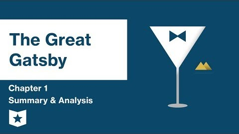

Every civilization builds monuments based on its desires. The Egyptians built pyramids to reach for the divine, the Romans built arches to symbolize their power, and America built Gatsby — a man who becomes his own monument.
The Great Gatsby, set in the 1920s, reflects a decade obsessed with invention, speed, and transformation. Blinding lights, static-filled radios, automobiles, and skyscrapers dominate the era. Fitzgerald mirrors this technological obsession through Gatsby’s emotional architecture. Gatsby believes he can redesign himself as cleanly as a machine, yet Fitzgerald reminds us that humans, unlike structures, cannot be rebuilt without consequence.

Beneath the glittering parties and chandeliers lies something mechanical rather than musical. Gatsby constructs his identity like an architect designs a building. Daisy becomes the framework, wealth the steel, and hope the electricity that powers the structure. In contrast, Tom Buchanan represents inherited architecture , structures maintained, not built. Daisy, though admired, is hollow, like marble with nothing inside.
Gatsby’s tragedy is not emotional weakness but structural failure. He miscalculates the load his dream can bear. As literary critic Harold Bloom describes him, Gatsby is a “mythic engineer of the self,” creating emotional inventions that eventually collapse under reality’s gravity.
Gatsby as an American Experiment
Born James Gatz, Gatsby views his origins as a design flaw and replaces them with a fabricated identity. As Arnold Weinstein notes, American fiction is haunted by reinvention. Gatsby’s mansion becomes a prototype — impressive, luminous, and unstable. Every party, rumor, and tailored suit is a calculated variable in his experiment: can image override origin?
Click the image to watch on YouTube
Modern critic Ben McEvoy compares Gatsby’s illusion to Edison’s lightbulb: brilliant but temporary. Fitzgerald’s language mirrors this technology. His sentences accelerate like engines and flicker like circuits. The novel does not simply describe machinery — it behaves like it.
In the end, Gatsby’s dream collapses like a bridge overloaded beyond its limits. Nick Carraway becomes the inspector, documenting the wreckage. Yet even after failure, the blueprint survives. Fitzgerald’s final image of boats beating against the current suggests persistence, reminding us that America never stops building, even on ruins.